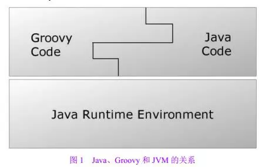

重新认识AndroidStudio和Gradle,这些都是你应该知道的
前言
本文要从AndroidStudio的环境安装升级，Gradle，Eclipse转AS,多渠道配置，Maven私服，Action，Option，快捷键等几个方面出发，讲一些操作技巧以及我对AndroidStudio使用的一些理解与经验。本文较全面的讲述了我们在开发中必须要了解的，比较多而全，可能不能马上记住，目的在于大家看完之后能有一个认识，在需要使用的时候知道有这么个东西。希望对你的开发工作有所帮助，不足之处，请批评指正。
提示：文中链接需要点击文章末尾处阅读原文才能点击。
零、
知识大纲
- Install&Settings&Update
- Gradle
- AS
- Gradle
- Groovy
- Gradle编程框架
- task
- Android文件结构
- 几个gradle配置文件
- Gradle构建过程简析
- 构建流程图
- 分析
- 构建速度优化
- 注意AS配置
- 慎重sub-module
- 守护进程daemon
- 并行编译parallel
- 依赖库使用固定版本
- 去除无用的构建任务task
- 巧用include
- Instant Run
- Maven仓库
- maven() 和 jcenter()
- maven私服
- 多渠道
- 简介
- 配置
- Eclipse项目彻底转为AS
- 策略
- 坑
- 技巧
- 只有一个快捷键
- 提示类
- 编辑类
- 查找替换类
- 代码检查以及质量改善
- inspect code
- clean up
- 调试
- Monitors
- Memory
- CPU\NetWork\GPU
- 单元测试
- 分分钟上手单元测试
- 单元测试的意义简单理解
- 终极技巧
- SimpleUML
- MarkDown
- 插件：plugin
- 书签、喜欢分组（bookMarks）
- 抓屏布局分析（LayoutInspector）
- 宏（Edit|Macors）
- LiveTemplates (Settings|Live Teamplates)
- Intentions
- 版本管理Annotate
- layout布局遍历
- 巧用Alt+Enter
- 巧用注解
- 一些有趣的Task
- AS 2.2新特性
一、
Install&Settings&Update
1、Gradle
Gradle官方会不断更新，我们可以使用本地安装的方式，并配置path，我们就可以使用Terminal直接输入gradle命令执行构建任务。当然如果我们想快速更新，可以修改配置文件。 首先，修改project\gradle\warpper\gradle-warpper.properties 文件，其中distributionUrl的值：
distributionUrl=https\://services.gradle.org/distributions/gradle-2.4-all.zip
这里实际是从网络下载配置的版本，会自动检测，如果不是的就会下载。
然后修改 project的build.gradle
dependencies {
classpath 'com.android.tools.build:gradle:1.3.0'
// NOTE: Do not place your application dependencies here; they belong
// in the individual module build.gradle files
}
注意：这两个配置是一一对应的，比如gradle-2.4-all对应的就是1.3.0。后者的意思是这个project配置的gradle构建版本为1.3.0，前者的意思是这个project使用的gradle的版本为2.4。我们会发现，如果我们修改前者，如果本地没有安装这个版本的gradle，会自动从gradle官网下载。但是，如果我们修改后者，它会自动从jcenter()仓库下载一些plugin之类的。
2、AS具体的安装和更新网上有许多的详细教程，我只想说以下三点。
- Android Studio是Google官方基于IntelliJ IDEA开发的一款Android应用开发工具,绝逼比Eclipse强大，还没有转的尽快吧；
- 关闭AndroidStudio的自检升级，如果准备好升级还是自己选择想升级的版本升级靠谱；
- 升级前导出AndroidStudio的配置文件；settings.jar(C:\Users\Administrator.AndroidStudio1.4\config目录下，或者操作File|Export Setings导出)，升级后导入Settings.jar，这样就不需要重新配置，有必要的话给自己备份一个，说不定老天无缘无故挂了重装很方便；
- 具体细节的配置可以阅读，强烈建议直接打开AS的设置窗口，多转几次就熟悉了里边的各种配置啦。也可以参考这边文章，（1.4版本，有点旧了，差不多够用）打造你的开发工具，settings必备。
二、
Gradle
1
简述Groovy语言
Groovy是一种开发语言，是在Java平台上的，具有向Python，Ruby语言特性的灵活动态语言,Groovy保重了这些特性像Java语法一样被Java开发者使用。编译最终都会转成java的.class文件。他们的关系如下图。我想这大概也是Gradle构建系统为什么要选择Groovy的原因，它具有java语言的特性，开发者容易理解使用。一定要明白我们在build.gradle里边不是简单的配置，而是直接的逻辑开发。如果你熟练掌握Groovy，那么你在build.grale里边可以做任何你想做的事。

2
Gradle编程框架
Gradle是一个工具，同时它也是一个编程框架。使用这个工具可以完成app的编译打包等工作，也可以干别的工作！Gradle里边有许多不同的插件，对应不同的工程结构、打包方式和输出文件类型。我们经常使用到的便是maven\java\com.android.application\android-library等。当按照要求配置好gradle的环境后，执行gradle的task，便会自动编译打包输出你想要的.apk.aar.jar文件，如果你足够牛逼，你有gradle就够了，直接拿记事本开发；
如下图，是Gradle的工作流程。
- Initialization 初始化，执行settings.gradle(我们看到都是include ':xxx'，实际里边可深了）
- Hook 通过API来添加，这中间我们可以自己编程干些自己想做的事情
- Configuration 解析每个project的build.gradle，确定project以及内部Task关系，形成一个有向图
- Execution 执行任务，输入命令 gradle xxx ,按照顺序执行该task的所有依赖以自己本身

3
关于Gradle的task
每个构建由一个或者多个project构成，一个project代表一个jar，一个module等等。一个project包含若干个task，包含多少由插件决定，而每一个task就是更细的构建任务，比如创建一个jar、生成Javadoc、上传aar到maven仓库。我们可以通过执行如下命令查看所有的task:
gradle tasks --all
当然，我们也可以在AS中可以看到所有的task，双击就可以执行单个的task.

当然，我们也可以在build.gradle中写自己的task。关于详细的task介绍可以查看网络资料进行学习，推荐Gradle入门系列，基本花上半天到一天的时候简单的过一遍就有一个大概的了解。
4
Gradle环境下Android的默认文件结构
5
build.gradle、gradle.propeties文件
- build.gradle文件(主工程的Top-level)
apply from:"config.gradle"//可以给所有的module引入一个配置文件
buildscript {
repositories {
jcenter()
}
dependencies {
classpath 'com.android.tools.build:gradle:1.3.0'
// NOTE: Do not place your application dependencies here; they belong
// in the individual module build.gradle files
}
}
allprojects {
repositories {
jcenter()//引入远程仓库
maven { url MAVEN_URL }//引入自己的私有maven仓库
}
} - gradle.properties(全局配置文件）
# This can really make a significant difference if you are building a very complex project with many sub-module dependencies:
#sub-module并行构建
org.gradle.parallel=true
#后台进程构建
org.gradle.daemon=true
#私有maven仓库地址
MAVEN_URL= http://xxx.xx.1.147:8081/nexus/content/repositories/thirdparty/ - build.gradle(module)
apply plugin: 'com.android.application'//插件 决定是apk\aar\jar等
android {
compileSdkVersion 23
buildToolsVersion "24.0.0"
// 此处注释保持默认打开，关闭后可使不严格的图片可以通过编译,但会导致apk包变大
//aaptOptions.cruncherEnabled = false
//aaptOptions.useNewCruncher = false
packagingOptions {
exclude 'META-INF/NOTICE.txt'// 这里是具体的冲突文件全路径
exclude 'META-INF/LICENSE.txt'
}
//默认配置
defaultConfig {
applicationId "com.locove.meet"
minSdkVersion 16
targetSdkVersion 23
versionCode 1
versionName "1.0"
multiDexEnabled=true//65536问题
}
sourceSets {
main {
jniLibs.srcDirs = ['libs']//重新配置路径
}
}
buildTypes {
release {
// zipAlign优化
zipAlignEnabled true
// 移除无用的resource文件
shrinkResources false
// 混淆
minifyEnabled false
proguardFiles getDefaultProguardFile('proguard-android.txt'), 'proguard-rules.pro'
signingConfig signingConfigs.releaseConfig
}
}
}
dependencies {
compile fileTree(dir: 'libs', include: ['*.jar'])
compile 'com.google.code.gson:gson:2.2.+'
testCompile 'junit:junit:4.12'
}
6
Gradle编译文件和缓存文件
- gradle缓存文件：C:\Users\Administrator.gradle\caches\modules-2\files-2.1
- idea缓存文件： C:\Users\Administrator.AndroidStudio1.4
一旦缓存到本地后，如果版本没有更新直接使用的是本地缓存文件。
三、
构建过程分析
这里参考了QQ音乐技术团队Android构建过程分析 下图是文章末尾的一张构建流程图： 
- 解压合并资源
主要是assets目录，res目录，Androidmainfest.xml目录。其中合并的时候会涉及到优先级的问题，详情请查看该篇文章。 - AAPT(Android Asset Packaging Tool)打包
- R.java文件 资源ID
- app.ap 压缩包
- 对png图进行优化等
- 源码编译：
生成.class字节码，在这里可以进行删除无用类，字节码优化，重命名（包名），还有一点就是代码混淆
- 生成dex、打包签名、zipalign
四、
构建速度优化
AS编译太慢是我们经常吐槽的，我们该做些什么来加快编译的速度呢？前面我们简单的了解了gradle构建项目的流程。我们可以从以下几个方面来做：
注意AS配置：
如及时更新Gradle和JDK版本、扩大AS内存等（修改-Xms256m）、取消AS的自更新设置，去除不经常使用的插件等。
慎重sub-module：
减少sub-module或者将sub-module导成aar,并上传到私有的maven仓库就更加方便啦,每增加一个sub-module的构建的时间会增加很多。从根上解决这个问题，我们应该增加sub-module时要慎重，同时要考虑他的独立性,与主module要完全解耦。这样我们不会再开发的时候产品要换个ui图也跑到sub-module里边修改。当我们修改了sub-module的时候，编译器会检测到修改重新编译，然后copy到主工程的buid/intermediates/exploded-aar目录下。
守护进程daemon:
当我们在gradle.properties中配置org.gradle.daemon=true的时候，相当于开了个进程，这样我们构建项目的许多工作比如加载虚拟机之类的就在该进程中完成。
并行编译parallel:
这个适用于有多个依赖sub-module的情况下，如果单单只有一个module实测会耗时更多。看看官方的说法：When configured, Gradle will run in incubating parallel mode.This option should only be used with decoupled projects. org.gradle.parallel=true。这里通过增大gradle运行的java虚拟机大小，达到多个module并行构建的目的。
依赖库使用固定版本：
我们配置依赖的时候 如依赖V4包，com.android.support:support-v4:23.0.0+，再后边有个+后表示依赖最新的，这样可以保证依赖的库有更新时能够得到更新。但是，小编并不建议这么做。因为每次构建都需要访问网络去判断是否有最新版本，这样也是需要耗时的。我们可能需要频繁的构建调试，但是我们一般很少更新库。当然，这些可以配置在你的release分支上，总之，调试的请配置固定版本吧。
去除无用的构建任务task：
Gradle每次构建都执行了默认的许多task，其中部分task是我们不需要执行的，至少在调试的时候不需要，我们可以把这些屏蔽掉，方法如下：
tasks.whenTaskAdded { task ->
if (task.name.contains('AndroidTest') || task.name.contains('Test')) {
task.enabled = false
}
}
巧用include：
对于我们没有依赖的module，我们可以在settings.gradle里边去掉改module的include，建议写成一行只include一个module，如下：
include:'lib1'
//include:'lib2'
这样我们实际就只include了lib1,当我们sync或者build\clean的时候就没有lib2的事啦，这样解决时间。
减少构建过程中的I/O操作：I/O操作，如copy文件，访问git等,Debug版本配置的minSdkVersion 21+（builder faster）
Instant Run:
注入依赖技术，不需要安装就可以达到更新apk的目的。 详细参考Instant Run: How Does it Work?!
最后还想说几点：
1、不仅仅只是快1mms：
这里的每一项我都尝试配置使用过，实际测试基本可以解决个10多mms，当然也得看你的项目当然的状态，以及你编辑修改的东西。虽然解决下的时间不是很显眼，但是如果用百分数来看可以提高到20%的速度你就能感受到其中的价值啦，然后再乘以你编译的次数，绝对的节约时间。
2、组件化的优势：
另外一点我曾在知乎上也回答过，尽量的模块化项目内容，对于一些功能特点我们都可以抽象成小组件在demo中调试完成，然后挪到工程里边。这样不仅丰富了自己的公共库，也提高了工作效率。
3、java调试或者说单元测试：
对于纯java的业务（相信在model层里有很多都是）我们可以通过只运行java来调试，比如我最近在做单词的短语匹配算法，那么我在调试的时候再class里边写个main方法（很low的方案），仅调试算法部分就好，然后实际还是要使用单元测试更优。
五、
Maven仓库
1、Jcenter和mavenCentral
- 区别：
- jcenter比mavenCentral仓库要全，性能优，响应要快但有一些构建还是仅存在maven里边。
- jcenter上传lib流程更加简单。
- 参数：
- group 分组
- artifact 名称
- version 版本
2、maven私服
- 本机搭建maven私服
- 本机作为服务器
- 本地的私服同时也可以添加外部私服代理
- 私服使用
- build.gradle
- 手动上传
- 上传
- 远程依赖
详细参考搭建自己的maven私服，并使用Gradle统一依赖管理。
六、
依赖以及统一依赖管理
- 统一依赖管理实际就是将每个module的依赖配置写到一个全局的配置文件中，方便我们管理。我们可以添加一个全局的config.gradle,然后在全局的build.gradle中apply一下。详解请参考文章搭建自己的maven私服，并使用Gradle统一依赖管理
- 官方资料
- How to distribute your own Android library through jCenter and Maven Central from Android Studio

七、
多渠道配置
BuildType+ProductFlavor=Build Variant
buildType称为构建类型，ProductFlavor称为定制产品。怎么理解呢？buldType默认有debug和release两个版本，而productFlavor默认是匿名的。我们可以这么理解，buildType是我们开发需要的通用类型，比如默认的调试、发行版本、也可以定制方便测试人员测试的版本，对于ProductFlavor就是我们需要对产品进行定制啦，不同的Product对应了独有的部分代码，比如我们要开发个免费版、企业版，这里是举个例子，主要还是要看你的产品构成。两者还有一个区别在于，buildType默认共享一个defaultConfig,但是不同的Product可以对应不同的xxxConfig，由此就可以拥有不同包名等。
下面教你如果给有多重依赖关系module配置多渠道，直接贴码说明： 我们假设A依赖了B、B依赖了C
//A为主工程
productFlavors{
free{
//免费版
minSdkVersion 21
}
pay{
//付费版
minSdkVersion 14
}
}
buildTypes{
release{
resValue "string", "app_name", "CoolApp"
signingConfig signingConfigs.release
buildConfigField "String", "API_URL", '"http://api.dev.com/"'
buildConfigField "boolean", "REPORT_CRASHES", "true"
}
debug{
applicationIdSuffix ".debug"
versionNameSuffix "-debug"
resValue "string", "app_name", "CoolApp (debug)"
signingConfig signingConfigs.debug
buildConfigField "String", "API_URL", '"http://api.prod.com/"'
buildConfigField "boolean", "REPORT_CRASHES", "false"
}
}
dependencies{
freeCompile project(path:'B',configuration:'freeRelease')
freeCompile project(path:'B',configuration:'freeDebug')
payCompile project(path:'B',configuration:'payRelease')
payCompile project(path:'B',configuration:'payDebug')
}
//B为依赖工程
publishNonDefault true //依赖工程这一句很重要，不然sync不过
productFlavors{
free{
}
pay{
}
}
buildTypes{
debug{
}
release{
}
}
dependencies{
freeCompile project(path:'C',configuration:'freeRelease')
freeCompile project(path:'C',configuration:'freeDebug')
payCompile project(path:'C',configuration:'payRelease')
payCompile project(path:'C',configuration:'payDebug')
}
//在对应的module里面新建和main平级，和productFlavors名字相同的问题夹，并且将src等放在和main相同的路径下就ok啦，编译不同的渠道会找不同的文件。
- 多渠道的意义
- 可以配置不同的URL地址
- 不同的名字、版本名、ApplicationId
- 不同的签名配置
- 不同的源码
- 不同的manifest
- 不同的sdk
- 小结
不同的产品要求、不同的生产环境，我们都可以通过配置多个渠道来达到我们的工作要求，省时省力。
八、
Eclipse项目彻底转为AS
- 1、策略
- 步骤一：Eclipse导出，获得xxx.gradle
- 步骤二：画出依赖关系图
- 步骤三：调整文件结构，把文件结果弄成标准的，用资源管理器就可
- 步骤四：修改build.gradle，修复依赖关系
- 步骤五：建立gradle统一管理（对于大项目依赖负责，常更新的还是有必要的）
- 2、坑
平时使用的时候也会出现这种问题，好好的sync的时候，一直报R文件找不到，clean后还是不行，我的解决方案是在settings.gradle文件里边注释掉报错的module所有上层的include，包括自身，sync一下没有问题。然后打开自己，sync没有问题，然后逐层向上打开工程，一切ok。 - Multiple dex files define Lcom.xxx.xxx.xxx
- R文件不存在
- 3、技巧
- 依赖关系理清，由下至上
- 灵活使用settings.gradle,控制include，可以sync，build任何一个工程以及所依赖的工程，减少时间，方法查找问题，提高效率
- 构建交给服务器（如果公司有服务器构建的话，对于大项目可以交给服务器来编译，解放自己的电脑来干别的工作）
- clean、Invalidate Caches、Restart、删除.idea、.gradle
九、
只有一个快捷键
网络上有许多的快捷键大全之类的，看的密密麻麻的东西我就头晕，最后在知乎上有位大神提到AS只有一个快捷键，那就是Control+Shift+A，瞬间顿悟。所以后面我很少去既什么操作快捷键是什么，而只是研究快捷操作英文名是什么？比如说定位跳转到某一行，我只要control+shift+A，然后输入Line,就会列出所有有关line的操作，与此同时，每次操作我都会留意下跟在后边括号里边的快捷键是啥，如此往复循环一次，使用频率高的就给记住直接的快捷键，没有记住的模糊搜索下操作指令名称也能快速找到，如果没有可以去keymap里边自定义设置。关于操作，大概总结了以下几类：
- 1、提示
- 源码提示：Documentationctrl Ctrl+shift+space 连续两次放大查看 再次点击缩小
- 查看某个方法的调用路径：Call Hierachy Ctrl+alt+h
- 查看某个方法的具体内容：Definition Ctrl+Shift+I
- extends或者implement 的所有子类 choose Implementation Ctrl+Alt+B \Ctrl+T
- 2、编辑
- 同起点：按住Alt，同时鼠标上下走
- 不同起点：按住Shift+Alt ，同时鼠标多处点击
- 多行编辑：按住Alt键，光标上下移动
- 自动补全：Surround ，if.else，try/catch可以使用快捷键Ctrl+Alt+T (Code | Surround With)
- 3、查找和替换 file find goto search replace
- 打开文件：enter file name ctrl+shift+r 输入文件名
- 打开文件-资源文件： ctrl+alt+F12 , 按住ctrl,鼠标点击
- 打开一个类： enter class name ctrl+shift+t 输入类名
- 跳转到一个方法：File Structure Ctrl+O 输入方法名
- 打开某一个对象： symbol 输入对象名
- 跳转到某一行：line 输入行数
- 跳转到当期接口的实现方法：implementation(s) ctrl+t
- 全部文件替换 Replace in path 比如你要替换整个工程真某个字符串
- 书签 bookmarks 我的总结是有限的，实际在官方文档中有分类说明：
- 说明：部分快捷键是以个人设置为准，具体还得看自己的配置。输入Contrl+Shift+A 之后，输入上面的蓝色关键字看看。

十、 代码检查
- 操作 Analyze | Inspect Code | 窗口显示
- Android
- performance
- Unused resources //没有使用到的资源（res）
- lint
- class structure
- File can be local //可以是局部变量的写成了全局变量
- Imports
- Unused import 没有使用的import
- General
- Default File Template Usage //有些没有使用模板的规范
- Performance issues
- 'StringBuffer'can be replaced with 'String'
- Probable bugs
- String comparison using '==', instead of 'equals()'
- 简单举例，也可以在面板上直接输入文字搜索
十一、
调试
这里不再过多叙述啦，本人实际开发中使用的也是比较基础，不过有个技巧，当我们按住Alt键然后点击某一行代码，可以查看到这一行代码的执行结果。前提是这行代码已经执行过啦，觉得还是挺好用的。更多可以参考Android Studio代码调试大全学习。
十二、
终极技巧
- 合理使用插件：plugin
- SimpleUML（快速输出UML图，一个class或者一个package或者一个module都可以）
- MarkDown
- 书签、喜欢分组（bookMarks、favorites）
这个可以将自己一些重要的代码行打个标签，方便下一次查看。查看面板在左下角，如图： - 抓屏布局分析（LayoutInspector）
- 宏（Edit|Macors）
这个和office办公软件有点类似，我们可以录制一段操作，然后播放就可以自动执行录制好的操作。
- Templates（模板）
- Intentions
意图，这里可以根据预设的代码结构来填充修改代码，比如我们有 a.equals("A"),如果我们按 Alt+Enter,就会有一个split的提示选项，点击之后代码就会变成 “A".equals（a）。具体有很多，打开设置面板自己看吧。 - 版本管理
- 分支代码对比 AS右下角的边框有分支可以看，点开就可以有许多的功能。前提是已经激活配置好git.
- Annotate

- layout布局遍历
- 巧用Alt+Enter
可以快速预览每个layout文件的布局效果
当我们的代码报错的时候，当我们希望有更多功能的时候，按这个快捷键就会有很多惊喜。比如，我们在一个Class上使用该快捷键，就会有提示添加单元测试 Create Test ，然后一秒钟添加好了单元测试类。

- 巧用Settings.gradle 我们可以通过注释include，达到自由管理项目中各个module，在我们编译出错的时候方便查问题。
- 快捷键，有这个命令图就够啦。

- 模板 Tools/Save File as a Template
- 巧用AS无处不在的筛选排列显示
- project里边的 project/android/FlattenPackages
- Find Usage 结果列表中的 write
- 以及每个工具面板中的筛选按钮
- 巧用注解@NonNull （官方文档 Improve Code Inspection with Annotations）
- 面板区域内直接输入搜索
我们在很多的面板，比如左侧的项目导航栏，可以直接输入字母模糊搜索你需要的文件。
- LocalHistory
代码编辑的历史记录，方便找回意外丢失修改的代码。
- 一些有趣的task
- Show us your Gradle tasks
- Gradle tips & tricks to survive the zombie apocalypse
- 根据git提交自动配置版本号
defaultConfig {
# Add 10000 to move past old SVN revisions.
versionCode gitCommitCount() + 10000 ?: 0
}
def gitCommitCount() {
try {
def stdout = new ByteArrayOutputStream()
exec {
commandLine 'git', 'rev-list', '--count', 'HEAD'
standardOutput = stdout
}
def commitCount = stdout.toString().trim().toInteger()
return commitCount
}
catch (ignored) {
return 0;
}
}
def gitRevision() {
try {
def stdout = new ByteArrayOutputStream()
exec {
commandLine 'git', 'rev-list', 'HEAD', '-n', '1'
standardOutput = stdout
}
def commitRevision = stdout.toString().trim()
return commitRevision
}
catch (ignored) {
return "(unknown revision)";
}
} - 其他参考
十三、
AndroidStudio 2.2新特性
- 设计
- 布局编辑器
- 约束布局
- 开发
- 改进C++支持
- 示例浏览器
- 构建
- Instant Run 改进
- Java 8 支持
- Open JDK 支持
- 测试
- 模拟器增加了虚拟传感器
- apk分析器
- 官方原版介绍+视频
十四、
总结
- Gradle是一个强大的包装机；
- maven远程依赖很给力；
- 快捷键只有一个，那就是Ctrl+Shift+A；
- 绝招有很多.套路太深，别说你不懂；
- 妹纸都是浮云，我们天天双眼就盯着AndroidStudio,所谓日久生情。
十五、 参考资料
- AndroidStudio UserGuide
- Gradle UserGuide
- Android Studio Project Site
- How I save 5h/week on Gradle builds
- AndroidStudio社区
- Gradle User Guide 中文版
- AndroidStudio2.2的新鲜事
- Maven仓库
- Gradle tips & tricks to survive the zombie apocalypse
版本更新记录
V1.0 2016-10-10
小贴士
本文版权归Open软件开发小组所有，如需转载请联系主编申请授权。
申请加群交流学习请加主编微信：Jf-1994（井方哥），并备注：姓名-地区-公司-职业-加群。
Open软件开发小组

专注Android开发，欢迎关注open_dev！
点击“阅读原文”